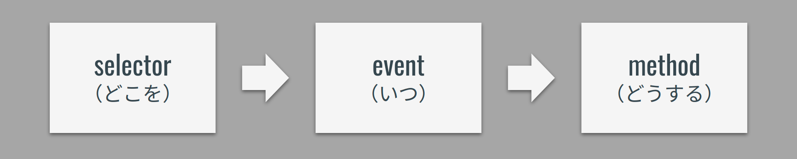

おみくじの Web アプリ実装
おみくじの処理自体はできたが，画面から操作できる Web アプリケーションにしたい！
想定される挙動
- 画面上の HTML 要素（DOM）をクリックして処理を実行！
- 要素を「指定」する！
- class や id で DOM を特定する．
- 指定した DOM に対して JavaScript で操作を行う！
例
- 「
idがbutton」の要素を「クリック」したら．．． - 「大吉-大凶のどれかをランダムに表示」！
参考（DOM）
HTML に記述されている各要素のこと（document object model）
基本の 3 要素
- selector（どこを）
- event（いつ）
- method（どうする）

なんだけど．．．
＿人人人人人人人人人人人人人人＿
＞ JavaScriptはDOM操作が苦手 ＜
￣Y^Y^Y^Y^Y^Y^Y^Y^Y^Y^Y^Y^Y^Y^￣
jQuery ライブラリ
jQuery とは
- セレクタを css と同じ要領で指定できる．
- 素の JavaScript よりも短く書ける！
- アニメーションなど手軽に設定できる．
- 書き方（順序や考え方）は JavaScript と同様！
- 導入が簡単（フレームワークなどは環境構築で詰む）
【参考】https://webkikaku.co.jp/homepage/blog/hpseisaku/webdesign/jquery_start/
💡 Key Point
- jQuery は JavaScript の DOM 操作を短縮して書けるライブラリ．
- 「JavaScript で行うたくさんの処理の中の DOM 操作だけをやる」と意識すると使いやすい．
- 計算などの処理を行うときは「乱数 javascript」，結果を表示するときは「jquery html テキスト 書き換え」などと検索するとヒットしやすい．
補足
ライブラリは他の開発者がつくったコードを利用させてもらうイメージ．手間のかかる処理を一発で書けるように実装してくれている．
ライブラリ読み込み
（jQuery に限らず）ライブラリはソースコードの読み込みが必要！！
（読み込みのコードは毎回同じなのでコピペで OK！）
<!-- 🔽 ここで読み込み 🔽 -->
<script src="https://ajax.googleapis.com/ajax/libs/jquery/3.6.0/jquery.min.js"></script>
<script>
// 自分で書いた処理
</script>
💡 Key Point
ライブラリを使用する場合は「自分で書く JavaScript より上の行で」読み込むこと．ライブラリで決められた関数を実行しようとして，読み込みが終わっていない状態だとエラーになってしまう．
jQuery の書き方と動き方
基本の考え方は JavaScript と全く同じッ！
コード例
idがbuttonの要素を- クリックしたときに
- アラートを出す
$("#button").on("click", function () {
alert("Hello World!");
});
コード内でそれぞれ以下の場所で指定している．
$(`セレクタ名`).on(`イベント名`, function () {
`実行したい処理（メソッド）`;
});
今回はidで指定しているが，セレクタの指定方法はたくさんある．イベントもたくさんある．
- 「
jQuery セレクタ」でググる！ - 「
jQuery イベント」でググる！
まずは形の入力に慣れよう！
いろいろな処理を書く前に，形の入力に慣れることが大事！！（慣れないとしょうもないスペルミスで時間溶かす）
$("#id").on("click", function () {
// ...
});
喋りながら書くと定着する（本当）
だらーあいでぃーおんくりっくふぁんくしょんかっこかっこなみかっこえんたー...
練習
おみくじアプリケーションを完成させよう！
仕様
- 「おみくじを引くボタン」をクリックしたら以下のどれかを画面に表示！
- 「大吉・中吉・小吉・凶・大凶」
ヒント
下記の流れで考えよう！
- ボタンをクリックしたらなにかする．
- ランダムな数値を発生させる．
- 条件分岐をつくって，対応する「大吉，中吉，...」を画面に表示させる．
$("#button").on("click", function () {
// 0から4でランダムな数を作成
// 0だったら大吉，1だったら中吉．．．
// 結果をidで指定した場所に表示
});